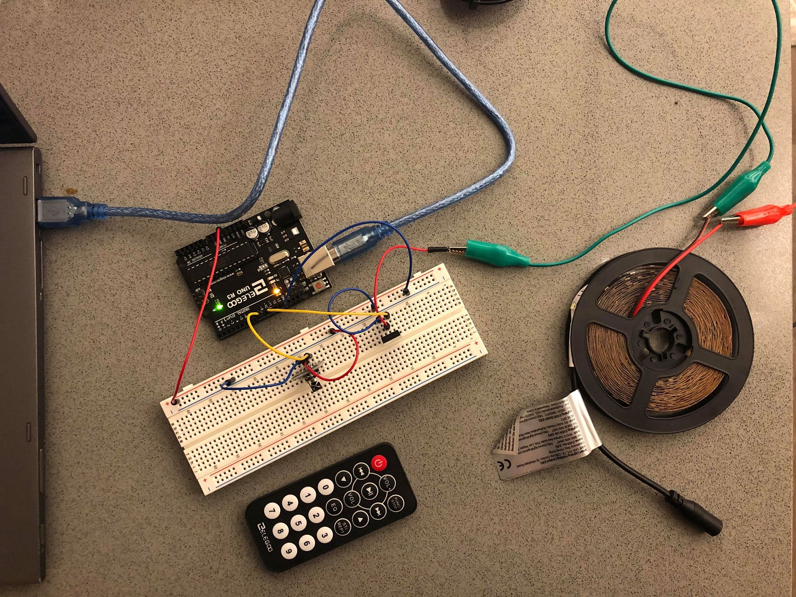
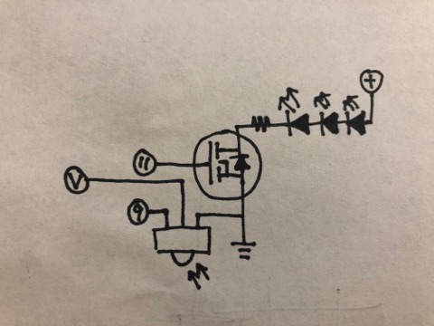

Jesse Du's Assignment 4!

A LED strip connected to an external power source and a N-MOSFET transistor in turn connected to analog pin 9; a separate IR receiver module connected to pin 9 and Arduino's 5V power source.

The LED's external power source is 12V, while the IR receiver draws from Arduino's 5V source. The transistor has a maximum drain current of 32A, while each LED strip segment takes 0.005A with 100 segments, so the transistor is well within the safe range.

LED light turns on and off as I press the remote's power key.
Below is the Arduino code snippet:
#include <IRremote.h> // install IR remote library
const int RECV_PIN = 9; // PWM pin for IR receiver module
IRrecv irrecv(RECV_PIN); // create irrecv object and specify reveicer pin number
decode_results results; // create results object
unsigned long key_value = 0; //create key value object for remote commands
int led = 11; // PWM pin the LED is attached to
int brightness = 0; // how bright the LED is
int fadeAmount = 5; // how many points to fade the LED by
// the setup routine runs once when you press reset:
void setup() {
// declare LED pin to be an output
pinMode(led, OUTPUT);
// set up IR receiver module
Serial.begin(9600); // configure serial monitor baud rate
irrecv.enableIRIn(); // start IR receiver module
irrecv.blink13(true); // set up Arduino on-board LED to blink when receiving signal
}
// the loop routine runs over and over again forever:
void loop() {
// if IR receiver receives a signal
if (irrecv.decode(&results)){
// if a key is pressed repeatedly
if (results.value == 0XFFFFFFFF){ // 0XFFFFFFFF code means repition of previous key
results.value = key_value;
}
// create sensorValue to store current state of LED (to turn it on or off)
int sensorValue = 0;
sensorValue = digitalRead(led);
// starts LED action depending on signal
switch(results.value){
case 0xFFA25D: // corresponding HEX code for power key
if (sensorValue == 0){
Serial.println("POWER ON"); // print key to serial monitor
analogWrite(led, 255); // LED on
break ;
}
if (sensorValue == 1) {
Serial.println("POWER OFF"); // print key to serial monitor
analogWrite(led, 0); // LED off
break ;
}
default:
Serial.println("other button"); // print to serial monitor if not power key
break ;
}
key_value = results.value; // key code stored in global variable key_value
irrecv.resume(); // reset IR receiver
}
}